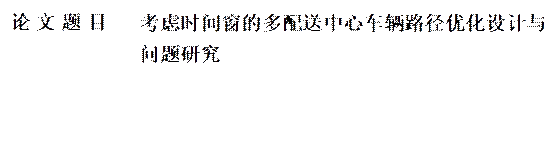 |
|||||
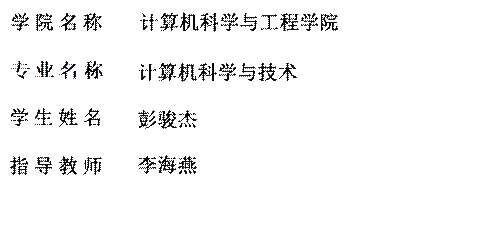 |
|||||
学号 20225801 密级________________
东北大学本科毕业论文
考虑时间窗的多配送中心车辆路径优化设计与问题研究
学 院 名 称 ：计算机科学与工程学院
专 业 名 称 ：计算机科学与技术
学 生 姓 名 ：彭骏杰
指 导 教 师 ：李海燕
副教授
2026年6月
Optimization Design and Problem Study of Multi-Depot Vehicle Routing Considering Time Windows
|
|
by Peng Junjie |
|
|
Supervisor: |
Professor |
Li Haiyan |
June 2026
郑 重 声 明
本人呈交的学位论文，是在导师的指导下，独立进行研究工作所取得的成果，所有数据、图片资料真实可靠。尽我所知，除文中已经注明引用的内容外，本学位论文的研究成果不包含他人享有著作权的内容。对本论文所涉及的研究工作做出贡献的其他个人和集体，均已在文中以明确的方式标明。本学位论文的知识产权归属于培养单位。
本人签名： 日期：2026年6月10日
摘 要
随着物流配送网络规模不断扩大以及客户服务时效要求不断提高，多配送中心带时间窗车辆路径问题逐渐成为物流优化研究中的重要内容。该问题同时涉及客户分配、车辆路径构造、容量约束和时间窗约束，具有较强的组合复杂性和实际工程意义。本文以多配送中心带时间窗车辆路径问题为研究对象，围绕分解法与整体法两条技术路线开展研究。
在分解法框架下，将问题划分为多车场客户分配和车场内路径优化两个阶段。第一阶段分别采用精确算法、广义指派、扫描修复以及基于蜣螂优化思想的修复分配方法进行求解与比较；第二阶段以蚁群算法为核心，针对带时间窗和异构车队条件下的路径优化问题，从多因子启发函数、信息素更新、自适应参数、群体分工、多蚁群协同以及蜣螂优化思想融合等方面对算法进行了改进。此外，本文还设计了整体法蚁群算法和整体法蜣螂优化算法，并与分解法进行对比分析。实验结果表明，在第一阶段中，与精确算法对比，基于蜣螂优化思想的修复分配方法在后续路径求解衔接方面更具适用性。在第二阶段中，分解法整体优于整体法；在多种改进蚁群算法中，结合了蜣螂算法分工思想和多蚁群协同，采用多因子启发信息、分层搜索机制、精英信息素强化和参数自适应优化的改进算法表现最好。
综合实验结果可以看出，对于本文所研究的算例，采用“客户分配+车场内路径优化”的分解求解框架更为合适，将多因子启发、精英强化和群智能融合机制引入蚁群算法，能够有效提升多配送中心带时间窗车辆路径问题的求解效果。
关键词：多配送中心车辆路径问题；时间窗；分解法；蚁群算法；蜣螂优化算法
ABSTRACT
With the expansion of logistics distribution networks and the increasing demand for service timeliness, the multi-depot vehicle routing problem with time windows has become an important topic in logistics optimization. This problem involves customer assignment, route construction, capacity constraints, and time window constraints, and has strong combinatorial complexity and practical significance. This thesis studies the problem from two perspectives: the decomposition method and the whole-network method.
Under the decomposition framework, the problem is divided into two stages: multi-depot customer assignment and intra-depot route optimization. In the first stage, an exact algorithm, generalized assignment, sweep-repair, and a repair assignment method inspired by dung beetle optimization are compared. In the second stage, ant colony optimization is improved through multi-factor heuristic functions, pheromone updating, adaptive parameters, population role division, multi-colony cooperation, and the integration of dung beetle optimization ideas. In addition, whole-network ant colony and whole-network dung beetle optimization algorithms are designed for comparison. Experimental results show that the dung-beetle-inspired repair assignment method is more suitable for subsequent route optimization in the first stage. In the second stage, the decomposition method performs better than the whole-network method. Among the improved ant colony algorithms, the method combining dung beetle division-of-labor ideas, multi-colony cooperation, multi-factor heuristic information, layered search, elite pheromone reinforcement, and adaptive parameter optimization achieves the best performance.
The results show that, for the instances studied in this thesis, the decomposition framework of customer assignment and intra-depot route optimization is more suitable. Introducing multi-factor heuristics, elite reinforcement, and swarm-intelligence hybrid mechanisms into ant colony optimization can effectively improve the solution quality of the problem.
Key words: multi-depot vehicle routing problem; time windows; decomposition method; ant colony optimization; dung beetle optimization
目 录
（黑体小二号，段前0.8，段后0.5行）
摘要……………………………………………………………….………………………I
ABSTRACT…………………………………………………………………………….II
1 绪论…………………………………………………………………………………….1
1.1 课题研究背景及意义……………………………………………………………1
1.2 国内研究现状…………………………………………………………….….…3
1.3 本文研究内容和技术路线………………………………………………..……6
1.4.1 本文的研究内容………………………………………………….………6
1.4.2 本文的研究方法和技术路线…………………………………………....10
1.4 论文组织结构……………………………………………………….……….…11
2 尾砂胶结充填体力学特性研究……………………………………………....13
2.1 尾砂胶结充填体的物理力学性能及胶凝机理……………………………....13
2.1.1 尾砂胶结充填体的物理力学性能……………………………………...13
2.1.2 尾砂胶结充填体的胶凝机理…………………………………………...15
2.2 尾砂胶结充填体的力学实验……………………………………………...........16
2.2.1 尾砂物理力学参数测试…………………………………………………..16
2.2.2 尾砂胶结充填体力学实验……………………………………………...17
2.3 尾砂胶结充填体破坏规律分析…………………………………………........19
2.4 本章小结…………………………………………………………………........…20
（各章的名称黑体四号，其余宋体小四号，英文、阿拉伯数字用Times New Roman体）
（行间距为1.5倍）
……
结论…………………………………………………………….………………………51
参考文献……………………………………………………….………………………53
附录…………………………………………………………….………………………57
致谢………………………………………………………….………………………61
（结论、参考文献、致谢及附录黑体
摘 要 ................................................................................................
I
ABSTRACT
..........................................................................................
II
1 绪论 ...................................................................................................
1
1.1 课题研究背景及意义
.......................................................................................
1
1.2 国内外研究现状
...............................................................................................
2
1.2.1 多配送中心车辆路径问题(MDVRP)研究现状
........................................... 2
1.2.2 带时间窗车辆路径问题(VRPTW)研究现状
............................................... 3
1.2.3 智能优化算法在VRP中的应用现状
........................................................... 4
1.3 本文研究内容和技术路线 ...............................................................................
6
1.3.1 本文的研究内容
..........................................................................................
6
1.3.2 本文的研究方法和技术路线
...................................................................... 7
1.4 论文组织结构
...................................................................................................
8
2 相关理论与问题描述
..............................................................................
9
2.1 车辆路径问题及其扩展模型
........................................................................... 9
2.2 MDVRPTW问题定义与基本假设 ..................................................................
10
2.3 本文涉及的主要算法理论
.............................................................................
12
2.3.1 蚁群优化算法(ACO)基础理论
.................................................................. 12
2.3.2 蜣螂优化算法(DBO)基础理论
.................................................................. 14
2.3.3 广义指派(GAP)与扫描法(Sweep)聚类理论
.............................................. 16
2.4 本章小结
.........................................................................................................
18
3 多配送中心带时间窗车辆路径优化建模 .............................................. 19
3.1 问题场景与符号定义
.....................................................................................
19
3.2 目标函数构建（总成本与总距离）
............................................................. 21
3.3 约束条件建模
.................................................................................................
23
3.3.1 异构车辆容量约束
.....................................................................................
23
3.3.2 客户与车场双重时间窗约束
..................................................................... 24
3.3.3 逻辑流与变量约束
.....................................................................................
25
3.4 联合目标与多蚁群双目标扩展模型
............................................................. 26
3.5 本章小结
.........................................................................................................
27
4 分解法(两阶段)求解框架设计与实现 ..................................................
28
4.1 分解法总体求解框架
.....................................................................................
28
4.2 第一阶段：客户-车场分配策略设计
............................................................ 29
4.2.1 基于几何与指派的基线分配（扫描法与GAP启发式）
........................... 29
4.2.2 基于精确数学规划(MILP)的理论最优分配边界
..................................... 31
4.2.3 基于DBO动态权重优化与极限时间窗贪婪修复策略 (核心创新1) ...... 32
4.3 第二阶段：车场内独立VRPTW路径优化设计
........................................... 34
4.3.1 基础蚁群算法与异构车队适配
................................................................. 34
4.3.2 融合DBO等级制度的异质变异蚁群算法 (Improve 1)
............................ 35
4.3.3 引入自适应参数与MMAS信息素截断的改进策略 (Improve 3)
........... 37
4.3.4 基于DBO在线调参驱动的超启发式蚁群算法 (Improve 5) (核心创新2) . 38
4.3.5 引入异步交流机制的多蚁群系统(MACS) (Improve 6.3) ....................... 40
4.4 本章小结
.........................................................................................................
41
5 整体法求解框架设计与实现 .............................................................. 42
5.1 整体法核心思想与连续转离散编码机制 ..................................................... 42
5.2 全局蜣螂优化算法(Whole
DBO)设计
.......................................................... 44
5.3 全局蚁群算法(Whole
ACO)设计
.................................................................. 46
5.3.1 全局启发因子与多车型动态调度机制 ..................................................... 46
5.3.2 融合等级制度的改进全局蚁群算法 (Whole ACO Improve) .................. 48
5.4 本章小结
.........................................................................................................
50
6 实验结果与性能分析
......................................................................... 51
6.1 实验环境与测试数据集说明
......................................................................... 51
6.2 第一阶段：分配算法横向对比实验与分析 ................................................. 53
(定量对比：K-means
vs Sweep vs GAP vs DBO vs Exact MILP)
6.3 第二阶段：分解法路径规划纵向消融实验 ................................................. 55
(定量对比：基础ACO
-> Improve 1 -> Improve 3 -> Improve 5 -> MACS)
6.4 整体法算法对比实验与分析
......................................................................... 59
(定量对比：Whole
DBO vs Whole ACO vs Whole ACO Improve)
6.5 分解法与整体法综合效能对比与场景适用性探讨 ..................................... 62
6.6 本章小结
.........................................................................................................
65
7 结论与展望
.......................................................................................
66
7.1 研究工作总结
.................................................................................................
66
7.2 论文创新点
.....................................................................................................
68
7.3 研究不足与后续展望
.....................................................................................
69
(注：根据东北大学规范，最后一章不需要本章小结)
参考文献
..................................................................................................
70
致谢
.........................................................................................................
73
附录
.........................................................................................................
74
实际物流配送系统是一个包含多重实体与复杂约束的动态网络。为了将实际的物理配送过程转化为计算机可求解的数学问题，本章首先对带时间窗的多配送中心车辆路径问题（MDVRPTW）进行场景描述与符号定义，随后构建以总配送成本（包含距离成本与时间窗惩罚）最小化为目标的单目标混合整数规划模型，最后针对算法设计需求，提出联合目标与双目标扩展模型。
本文所研究的 MDVRPTW 问题场景描述如下：物流网络中存在 M 个地理位置分散的配送中心（车场）与N 个有配送需求的客户点。每个配送中心 m 配备有Km(m=l,2,…,M)辆配送车辆。现已知车场 i到客户j的运输距离为dij
设客户编号集合为 C = {1, 2, ..., N}，车场编号集合为 D = {N+1, N+2, ..., N+M}，所有节点集合为 V = C ∪ D
引入以下已知参数：
gi ：客户点i的货物需求量
：车场m的车辆k的最大载重量
：车场m的车辆k的速度
：车场m最大仓储与服务容量
：客户i要求的货物最晚送达时间
:车场m的营业时间窗，即开门与关门时间
:晚于规定时间到达所产生的单位时间惩罚成本系数
:表示车辆 k 到达节点i的时间
:表示车辆k从节点i行驶到节点j的时间
为了高度贴合实际物流场景，本文引入异构车队概念，即不同车辆可能具有不同的最大载重量、行驶速度以及单位行驶成本。车辆从所属的配送中心出发，为一系列客户点进行物资配送，在完成所有指派任务后必须返回原配送中心。
在配送过程中，需满足以下基本假设条件：
(1) 需求不可拆分性：每个客户点的货物需求量一次性且仅由一辆车满足，不可拆分配送。
(2) 车辆归属唯一性：每辆车仅归属于一个特定的配送中心，且配送路线必须形成以该配送中心为起止点的闭环。
(3) 双重时间窗约束：客户点具有软时间窗要求，即车辆早于或晚于规定时间到达将产生等待时间或导致惩罚成本；配送中心具有硬时间窗要求，即车辆的出发与最终返回时间必须在配送中心的营业时间范围之内。
(4) 容量约束：单辆车的配送总量不得超过该车的最大载重，且分配给某个配送中心的所有客户需求总量不得超过该配送中心的最大仓储容量。
(5) 节点间距离由欧氏距离（Euclidean Distance）计算，且不考虑路况拥堵造成的额外延迟。
对应 MDVRPTW 的数学模型如下：
(1) 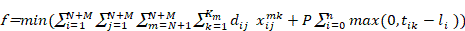
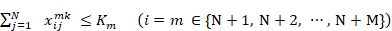
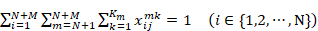
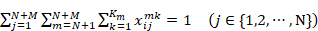
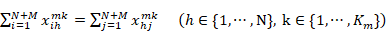
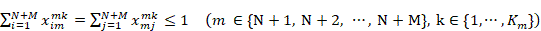
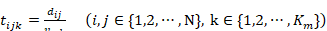
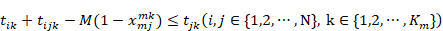
(10)
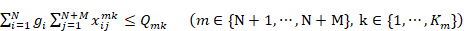
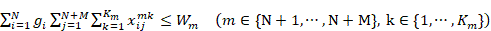
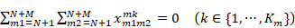
(14)
与传统的以单一距离为优化目标的基础模型不同，考虑到异构车队与客户软时间窗的存在，本文构建以综合物流总成本最小化为单目标函数的数学模型。综合成本由车辆行驶距离产生的运输成本与违反客户交货期限产生的时间窗惩罚成本两部分构成。如式 (2) 所示
为确保模型规划出的路径在物理逻辑与实际业务场景中绝对可行，需对上述目标函数施加严格的数学约束条件，主要包括容量约束、时间窗约束以及逻辑流约束。
本节约束确保分配过程在物理容量上合法，对应公式 (11) 与 (12)。
(1) 载重约束：式 (11) 表示每辆车的载重量不能超过其载重能力。此处在开题报告的基础上做了修改，将统一载重修改为异构载重，以适配代码中不同车型容量不同的设定。
(2) 车场总容量约束：式 (12) 是本文针对多车场分配阶段新增的宏观约束，确保分配给某车场 m 的所有客户的总需求量，绝对不能超过该车场的仓储服务上限。
本节约束确保车辆在时间逻辑上合理，对应公式 (8) 至 (10)。
(1) 行驶时间计算：式 (8) 定义了车辆行驶时间的计算方式，并引入异构速 替代恒定速度 v。
(2) 时间连续性约束：式 (9) 为到达时间推演约束。进行了大 M 法（M 为极大正数）的线性化约束。表示若车辆从 i 行驶到 j，则到达 j 的时间必定晚于离开 i 的时间。
(3) 车场硬时间窗约束：式 (10) 为本文的核心约束。严格限制车辆离开车场的出发时间 必须晚于车场开门时间，且完成任务返回车场的时间 必须早于车场关门时间 。
本节包含路径连通与服务合法性的基础约束，对应公式 (3) 至 (7) 以及 (13)。
(1) 车辆数量约束：式 (3) 限定各车场派出的车辆总数不超过该车场拥有的车辆数 Km。
(2) 服务唯一性约束：式 (4) 和式 (5) 保证每个客户只能被一辆车服务一次，即每个客户点的入度和出度均为 1。
(3) 流平衡与闭环约束：式 (6) 保证车辆到达客户 h 后必定离开。式 (7) 强制规定车辆从车场 m 出发，最终的终点必须是同一个车场 m。
(4) 路径合法性约束：式 (13) 确保车辆不能从一个车场直接行驶到另一个车场，禁止空驶。
在明确了上述单目标总成本模型后，为配合本课题后续算法设计阶段引入的多蚁群系统（MACS）架构，需对目标函数进行双目标扩展。除了追求运输总成本最低外，减少启用的车辆总数是降低固定成本的关键。因此增加第二个目标函数，如式 (14) 所示；表示最小化全网从各车场出发的车辆总数。该双目标扩展模型将“车辆数”与“行驶距离”剥离，为后续在算法阶段分别使用“车辆蚁群”与“距离蚁群”进行协同优化提供了数学基础。
本章对带有软硬时间窗约束的多配送中心车辆路径优化问题进行了系统性的数学抽象。首先明确了异构车队与时空多维约束的复杂场景；随后定义了决策变量并构建了以综合物流总成本最小化为导向的单目标函数；在此基础上，使用严谨的数学公式表达了包括异构车辆载重、车场总量限制、网络流平衡以及时序传递关系在内的各项约束条件；最后，结合本文后续的启发式算法改进思路，提出了双目标优化的扩展模型形式。本章建立的混合整数规划模型，为后续“分解法”与“整体法”两大求解框架的设计奠定了坚实的理论基础。
本章将针对第三章建立的多配送中心带时间窗车辆路径问题模型，详细说明本文采用分解法进行求解的具体过程。本文不采用将客户分配与车辆路径统一编码的整体求解方式，而是将原问题拆分为两个相互衔接的子问题：第一阶段完成客户到配送中心的分配，第二阶段在各配送中心内部独立求解带时间窗约束的车辆路径问题。这样处理的主要目的是降低单次搜索空间规模，并使客户分配与路径构造两个环节能够分别采用更适合的求解方法。
分解法的整体流程如下：
(1) 首先读取算例中的客户坐标、客户需求、配送中心坐标、车辆类型、车辆容量、车辆速度、单位运输成本以及客户与配送中心时间窗等信息，并完成数据预处理。
(2) 随后进入第一阶段，根据设定的分配策略为每个客户确定所属车场，输出客户标签结果。
(3) 标签结果确定后，原始多配送中心问题被拆分为若干个车场内子问题，每个子问题仅包含对应车场及其负责的客户集合。
(4) 最后进入第二阶段，对每个车场内子问题分别建立距离矩阵、车辆池和时间窗约束，调用路径优化算法求得各车场内部的配送方案，并将各子问题结果进行汇总，得到系统总里程、总成本以及车辆路径图。
采用上述两阶段框架有两个直接作用。其一，客户-车场分配结果可以直接决定后续子问题的规模和结构，使多配送中心问题转化为多个单车场 VRPTW 问题，便于在第二阶段集中研究路径算法本身。其二，第一阶段可以将容量上限和极限时间可服务性提前纳入考虑，从而减少第二阶段出现大量不可行解的情况，提高整体求解效率。本文程序实现中，第一阶段输出的客户标签文件直接作为第二阶段输入，因此两阶段之间的衔接关系明确，便于后续不同算法之间进行横向比较。
第一阶段的任务是确定每个客户由哪个配送中心负责服务。该阶段既影响配送中心之间的任务负载分布，也影响第二阶段各子问题的求解难度。因此，本文在第一阶段分别设计了基线分配方法、精确数学规划方法以及改进型分配方法。基线方法用于给出直观且易实现的参考方案，精确数学规划方法用于提供理论最优边界，而改进型分配方法则重点考虑后续路径求解的可行性与整体适用性。
为了给后续改进方法提供对照，本文首先采用扫描法和广义指派启发式作为第一阶段的基线分配方法。
扫描法的处理过程如下：
(1) 首先计算所有配送中心的几何中心，并以该中心作为极坐标原点；然后计算每个配送中心和每个客户点相对于该原点的极角；
(2) 再按照客户极角从小到大进行排序，模拟扫描线依次扫过客户点；
(3) 最后在扫描过程中，将当前客户优先分配给角度最接近且容量允许的配送中心。
(4) 若最接近的配送中心已无法继续承载该客户需求，则继续搜索其他仍有剩余容量的配送中心。
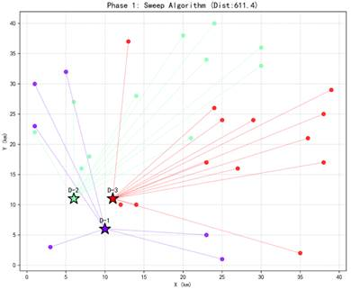
图 3- 1
扫描法的优点在于实现简单、运行速度快，能够快速得到一个满足基本容量要求的初始分配方案。
广义指派启发式则更强调“任务-资源”之间的代价匹配关系。本文在实现时将客户视为待指派任务，将配送中心视为具有容量约束的服务主体，并以客户到配送中心的距离代价作为主要依据进行逐步分配。与扫描法相比，GAP 启发式不再依赖空间角度顺序，而是直接从代价最小和容量可行两个角度出发完成客户指派，因此通常能够得到距离上更紧凑的分配结果。
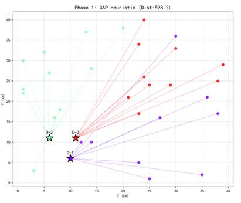
图 3- 2
这两类方法在本文中主要承担基线比较作用。扫描法代表了基于几何结构的快速划分思路，GAP 启发式代表了基于分配代价的约束指派思路。二者都能够在较短时间内完成第一阶段求解，但对后续路径问题中的时间窗传播关系考虑不足，因此其结果更多用于与后续精确数学规划方法和改进型修复分配方法进行比较。
为了考察启发式分配与最优分配之间的差距，本文进一步建立了第一阶段客户分配的混合整数线性规划模型。该模型以客户到所属配送中心的总分配距离最小为目标，通过 0-1 决策变量表示客户与配送中心之间的指派关系，并设置如下约束：每个客户只能且必须被分配到一个配送中心；每个配送中心所承担的客户总需求量不得超过其容量上限。
该模型的作用主要是提供理论最优分配边界。对于本文采用的算例规模，MILP 模型能够在可接受时间内求得距离意义下的最优分配结果，因此可以作为衡量扫描法、GAP 启发式以及后续改进分配方法优劣的重要参照。也就是说，当启发式方法的结果接近 MILP 模型结果时，说明该方法在第一阶段的距离分配质量较高；若与 MILP 差距较大，则说明仍存在明显改进空间。
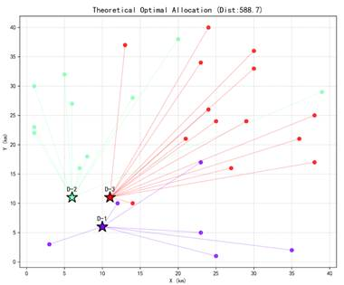
图 3- 3
需要指出的是，MILP 模型优化的是第一阶段的客户分配距离，而不是整个两阶段系统的最终配送成本。由于该模型不直接描述第二阶段的车场内路径结构，也不显式刻画路径构造过程中的时间窗传播关系，因此其最优解应理解为第一阶段分配问题的理论最优边界，而不能直接等同于完整 MDVRPTW 问题的最优解。基于这一认识，本文将 MILP 结果作为理论比较基准，而不直接作为最终工程实施方案。
为了在第一阶段同时兼顾分配距离、容量可行性和后续路径求解衔接性，本文提出了基于 DBO 动态权重优化与极限时间窗贪婪修复的客户分配策略。该方法包括“动态权重分配”和“贪婪修复”两个部分，其基本思路是先利用 DBO 搜索更优的配送中心权重，再对初始分配结果进行容量与时间窗联合修复。
在动态权重分配阶段，本文不再直接采用客户到配送中心的原始距离进行指派，而是为每个配送中心设置一个可调权重，并使用“距离×权重”的方式构造加权距离。对于任一客户，算法计算其到各配送中心的加权距离，并选择加权距离最小的配送中心作为当前归属。这样做的作用是使分配结果不再完全由空间距离决定，而是能够通过权重调节不同配送中心的吸引程度。
权重向量由蜣螂优化算法（DBO）负责搜索。适应度函数由两部分组成：一部分是真实分配距离，另一部分是容量超载惩罚。当某配送中心负载超过上限时，采用大惩罚系数和平方惩罚方式对其进行处罚，以迫使搜索结果尽量满足容量约束。为了清晰展现动态权重优化的寻优过程
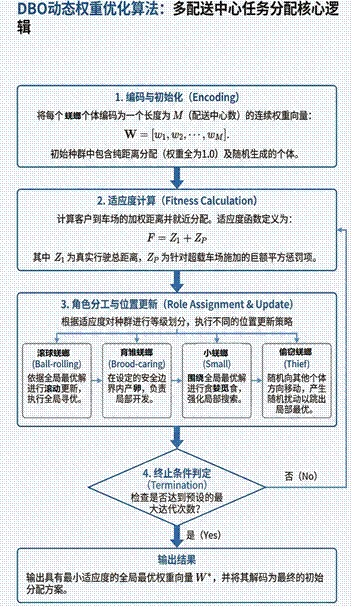
图 3- 4
本文设计的 DBO 权重优化算法流程 如下：
(1) 将每个蜣螂个体编码为一个长度为M（车场数的连续权重向量 为加速收敛，将纯距离分配（权重全为 1.0）作为初始解注入种群，其余个体在 区间内随机生成。
(2) 针对每个蜣螂个体计算所有客户到各车场的加权距离，并将客户就近分配。根据分配结果，计算真实行驶距离总和
与各车场负载。若车场超载，则施加巨额平方惩罚个体最终适应度 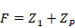
(3) 根据适应度排序，将种群划分为滚球蜣螂、育雏蜣螂、小蜣螂和偷窃蜣螂四种等级角色。滚球蜣螂依据全局最优解进行滚动更新；育雏蜣螂在设定的安全边界内进行局部产卵开发；小蜣螂围绕全局最优解进行贪婪觅食；偷窃蜣螂则随机向其他个体方向移动，增强算法跳出局部最优的能力。
(4) 重复执行步骤 2 与步骤 3，直至达到设定的最大迭代次数，输出拥有最小适应度的全局最优权重向量 ，并将其解码为初始分配方案。
在得到基于权重的初始分配结果后，本文进一步进行贪婪修复。修复的第一类对象是时间不可行客户。本文对每个客户执行极限时间可服务性检查：假设该客户由某配送中心最快车辆服务，车辆从配送中心出发后直接访问该客户并完成服务，再返回原配送中心，若在这种理想条件下仍无法在配送中心营业时间内完成往返，则认为该客户对该配送中心时间不可行。对当前分配下时间不可行的客户，优先尝试将其迁移到其他时间可行且不会导致严重超载的配送中心，并选择新增分配代价最小的迁移方案。
修复的第二类对象是容量超载车场。对于存在超载的配送中心，算法在其已分配客户中搜索最适合迁出的客户，并尝试将其转移至仍有剩余容量、且对该客户时间可行的其他配送中心。迁移准则仍然采用代价增量最小原则，即优先执行对总分配距离影响最小的调整。当不存在满足条件的迁移方案时，说明当前分配结构已经陷入死胡同，算法停止修复并输出当前结果。
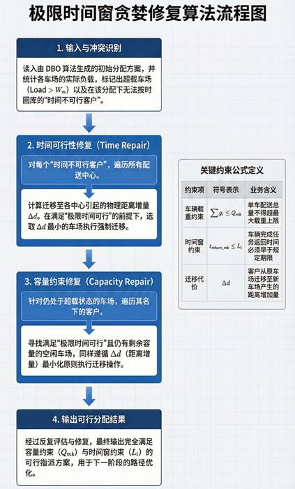
图 3- 5
本文设计的 极限时间窗贪婪修复算法流程 如下：
(1) 基于 DBO 输出的初始分配方案，统计各车场实际负载，标记超出容量上限的“超载车场”。同时，对所有客户执行极限时间预检，标记所有在分配车场内无法按时回库的“时间不可行客户”。若无任何冲突标记，则直接输出方案，修复结束。
(2) 若存在时间不可行客户，依次将其作为目标。遍历其余所有车场，寻找既满足极限时间可行性，又不会导致严重超载的候选车场。计算客户转移至各候选车场引起的物理距离增量。选取最小的车场进行强制迁移。若所有车场均不可行，则将该客户标记为不可服务（异常点剔除），以避免算法死锁。
(3) 若存在超载车场，从中选取一个，遍历其名下的已分配客户。对于每一个未满载的候选车场，首先校验目标客户迁入后是否满足极限时间可行性；若满足，则计算转移距离增量 。选取使最小的“客户-候选车场”组合执行迁移操作，并更新车场负载状态
(4) 累加修复移动次数。若移动次数达到安全上限，或步骤 1 中的检测不再存在任何冲突，则终止循环，输出最终完全可行的分配方案；否则，返回步骤 1 继续下一轮评估与修复。
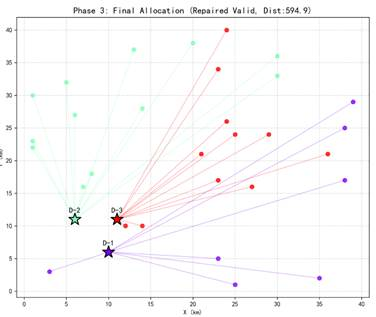
图 3- 6
因此，该方法的完整求解过程可以概括为：首先由 DBO 搜索配送中心权重；其次根据加权距离完成初始客户分配；然后检查时间可行性与容量可行性；最后使用贪婪迁移方式反复修复问题客户和问题车场，直到得到满足约束的分配方案或达到终止条件。与扫描法和 GAP 启发式相比，该方法在第一阶段已经开始考虑第二阶段路径求解的可执行性，因此更适合作为本文分解法框架中的核心分配策略。
参考文献
[1] 郭宁, 钱斌, 申秋义, 等. 超启发蚁群优化算法求解带柔性时间窗的绿色两级多周期车辆路径问题[J]. 控制与决策, 2025, 40(3): 745-754. DOI: 10. 13195/ j. kzyjc. 2024. 0202.
[2] 王铁君, 邬开俊. 带时间窗的多车场车辆路径优化的粒子群算法[J]. 计算机工程与应用, 2012, 48(27): 27-30.
[3] 张文义, 唐雨拉尔, 王旭兰, 等. 考虑双时间窗特性的机场多车型摆渡车调度优化[J]. 北京航空航天大学学报, 2025, 51(10): 3345-3353. DOI: 10. 13700/ j. bh. 1001-5965. 2023. 0579.
[4] 张强, 胡月, 陆俊翼, 等. 多策略蜣螂优化算法求解多车场车辆路径问题[J]. 吉林大学学报(理学版), 2025, 63(6): 1701-1712. DOI: 10. 13413/ j. cnki. jdxblxb. 2024282.
[5] 李欢. 改进遗传算法的带时间窗车辆配送路径优化[J/ OL]. 科技通报, 2025, 41(4): 36-41. http: / / dx. chinadoi. cn/ 10. 13774/ j. cnki. kjtb. 2025. 04. 005.
[6] 范厚明, 杨成, 张跃光, 等. 混合时间窗下多中心混合车队车辆路径优化[J]. 计算机集成制造系统, 2023, 29(10): 3529-3546. DOI: 10. 13196/ j. cims. 2023. 10. 027.
[7] 吴钧皓, 戚远航, 罗浩宇, 等. 带时间窗的车辆路径问题的混合粒子群优化算法[J]. 电子设计工程, 2024, 32(6): 21-26. DOI: 10. 14022/ j. issn1674-6236. 2024. 06. 005.
[8] 韩晨. 考虑车辆载重和时间窗约束的多目标物流配送路径优化[J]. 中国储运, 2025(5): 119. DOI: 10. 3969/ j. issn. 1005-0434. 2025. 05. 084.
[9] 张歆悦, 靳鹏, 胡笑旋, 等. 时间依赖型多配送中心带时间窗的开放式车辆路径问题研究[J]. 中国管理科学, 2024, 32(1): 146-157. DOI: 10. 16381/ j. cnki. issn1003-207x. 2021. 0203.
[10] 杨凯强. 带时间窗约束的车辆路径优化问题[J]. 中国水运, 2025(17): 154-157. DOI: 10. 13646/ j. cnki. 42-1395/ u. 2025. 17. 050.
[11] 贺琪. 带硬时间窗的车辆路径优化算法研究[D]. 重庆: 重庆交通大学, 2023.
[12] Haripriya K, Ganesan V K, Mohan U. Multi-objective Vehicle Routing Problem with Semi Soft Time Windows[C]/ / Industry 4. 0 and Advanced Manufacturing, Volume 2. 2025: 277-290.
[13] Birtolo C, Torre F. C2VRPTW: Assigning Capacity to Vehicles and Nodes in a Vehicle Routing Problem for Real-World Delivery Application[C]/ / Learning and Intelligent Optimization. 2025: 51-65.
[14] Yang F, Leus R. Scheduling hybrid flow shops with time windows[J]. Journal of heuristics, 2021, 27(1/ 2): 133-158. DOI: 10. 1007/ s10732-019-09425-w.
[15] An Exact Solution Framework for Multitrip Vehicle-Routing Problems with Time Windows[J]. Operations Research: The Journal of the Operations Research Society of America, 2020, 68(1): 180-198. DOI: 10. 1287/ opre. 2019. 1874.
[16] 任小强, 聂清彬, 王浩宇, 等. 基于粒子群和改进蚁群算法的云计算任务调度[J]. 计算机工程与设计, 2024, 45(6): 1797-1804. DOI: 10. 16208/ j. issn1000-7024. 2024. 06. 027.
[17] 张彪, 李永强. 基于动态寻优蚁群算法的移动机器人路径规划[J]. 仪器仪表学报, 2025, 46(3): 74-85. DOI: 10. 19650/ j. cnki. cjsi. J2513718.
[18] 孙蕴菲, 仉天宇, 尹建川, 等. 基于改进蚁群遗传算法的无人艇最短航路径规划[J]. 船舶工程, 2025, 47(6): 92-101. DOI: 10. 13788/ j. cnki. cbgc. 2025. 06. 12.
[19] Andreieva O, Zaiats V, Pavlichev A, et al. Ant Algorithm with Route Reservation[C]/ / 2023 IEEE 7th International Conference on Methods and Systems of Navigation and Motion Control: 7th IEEE International Conference on Methods and Systems of Navigation and Motion Control (MSNMC), 24-27 October 2023, Kyiv, Ukraine. 2023: 186-189.
[20] Abramov F, Serzhanov V, Reshetniak N, et al. Vector Ant Algorithm[C]/ / 2023 IEEE 13th International Conference on Electronics and Information Technologies: ELIT 2023, Lviv, Ukraine, 26-28 September 2023. 2023: 55-60.
[21] 时维国, 宁宁, 宋存利, 等. 基于蚁群算法与人工势场法的移动机器人路径规划[J]. 农业机械学报, 2023, 54(12): 407-416. DOI: 10. 6041/ j. issn. 1000-1298. 2023. 12. 040.
[22] 李涛, 赵宏生. 基于进化蚁群算法的移动机器人路径优化[J]. 控制与决策, 2023, 38(3): 612-620. DOI: 10. 13195/ j. kzyjc. 2021. 1324.
[23] 何美玲, 魏志秀, 武晓晖, 等. 基于改进蚁群算法求解带软时间窗的车辆路径问题[J]. 计算机集成制造系统, 2023, 29(3): 1029-1039. DOI: 10. 13196/ j. cims. 2023. 03. 029.
[24] 张松灿, 普杰信, 司彦娜, 等. 蚁群算法在移动机器人路径规划中的应用综述[J]. 计算机工程与应用, 2020, 56(8): 10-19. DOI: 10. 3778/ j. issn. 1002-8331. 1912-0160.
[25] 唐慧玲, 唐恒书, 朱兴亮. 基于改进蚁群算法的低碳车辆路径问题研究[J]. 中国管理科学, 2021, 29(7): 118-127. DOI: 10. 16381/ j. cnki. issn1003-207x. 2018. 1405.
[26] 范厚明, 吴嘉鑫, 耿静, 等. 模糊需求与时间窗的车辆路径问题及混合遗传算法求解[J]. 系统管理学报, 2020, 29(1): 107-118. DOI: 10. 3969/ j. issn. 1005-2542. 2020. 01. 012.
[27] 孙波, 姜平, 周根荣, 等. 基于改进遗传算法的AGV路径规划[J]. 计算机工程与设计, 2020, 41(2): 550-556. DOI: 10. 16208/ j. issn1000-7024. 2020. 02. 038.
[28] 李国明, 李军华. 基于混合禁忌搜索算法的随机车辆路径问题[J]. 控制与决策, 2021, 36(9): 2161-2169. DOI: 10. 13195/ j. kzyjc. 2020. 0107.